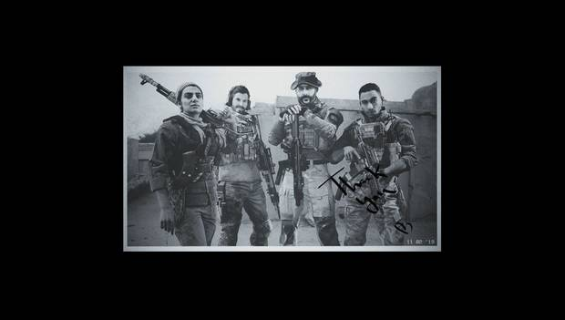
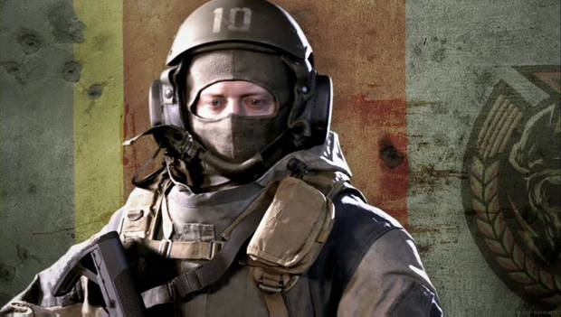
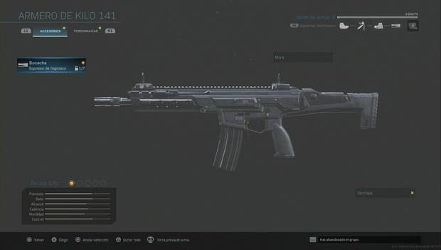
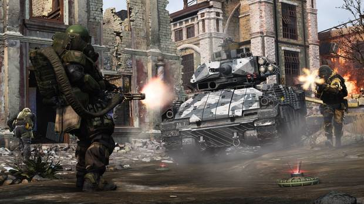

Guía de Call of Duty: Modern Warfare (2019), trucos, consejos y secretos
INICIO DE LA GUÍA
Call of Duty: Modern Warfare es el reboot de la saga del mismo nombre, parte de la franquicia Call of Duty. Ignorando los hechos de la trilogía original, vovemos a ver a personajes conocidos en un universo completamente diferente, con un nuevo conflicto, nuevas situaciones pero el mismo problema de siempre. Porque la guerra... la guerra nunca cambia.
A lo largo de esta guía os ayudaremos a completar la campaña del juego, además de enseñaros todo lo que necesitáis saber antes de meteros al modo multijugador. Ojo, no vamos a jugar por ti ni te vamos a convertir en la estrella de ningún equipo de eSports. Pero quizás con un poco de información básica seas capaz de mejorar por ti mismo y llegar a lo más alto.
Historia
La campaña del juego comienza cuando Al Qatala, un grupo terrorista, consigue llevar a cabo un atentado en territorio británico. Al mismo tiempo, una operación de la CIA en suelo ruso busca confirmar la presencia de armas químicas en una base comandada por un disidente del ejército. Cuando las cosas se compliquen más allá de cualquier límite, solamente el legendario capitán Price, del SAS, podrá dirigir a un equipo que evite la Tercera Guerra Mundial.

Niebla de guerra: la CIA busca armas químicas en suelo ruso.
Picadilly: un agente del SAS acude a lo que parece un posible atentado terrorista.
Infiltrados: la CIA contacta con los insurgentes.
Guerra subsidiaria: Alex continúa ganando el apoyo de Farah y los suyos.
Haciendo limpieza: Price y su equipo buscan información sobre el atentado de Picadilly.
Partida de caza: los marines se dirigen a un hospital donde podría esconderse el Lobo.
Embajada: el SAS acude a la ayuda de Alex para extraer un objetivo de gran valor.
Carretera mortal: los insurgentes se preparan para emboscar a Al Qatala.
Orígenes: Farah cuenta su historia.
La guarida del Lobo: el equipo al completo se dirige al escondite del líder de Al Qatala.
Cautivos: Farah recuerda los años que pasó como prisionera.
Viejos camaradas: Price y Garrick se dirigen a Rusia para conseguir información de su siguiente objetivo.
Silencio de radio: el capitán y su mejor hombre se dirigen a la hacienda de Barkov.
En el horno: Price comanda a todo el equipo en una última operación para detener una guerra inminente.
Modos multijugador
¿Tienes dudas sobre los modos disponibles en el multijugador competitivo? ¿Solamente te gustan esta clase de partidas si hay tus modalidades favoritas, como Baja confirmada o Demolición? Para resolver estas dudas, aquí te mostramos todos los modos de juego disponibles actualmente:

Partida rápida: si no quieres esperar, entra a este modo de partidas combinadas.
Guerra terrestre: una suerte de modo de dominio en el que los vehículos jugarán una parte importante.
Tiroteo: modo de juego por equipos. Gana el equipo que más eliminaciones consiga.
Contra todos: modo clásico, todos contra todos, gana el último jugador en pie.
Reglas tácticas: modo de juego sin interfaz. Solamente para los veteranos o quienes busquen un desafío más realista.
Partida privada: configura tus propias reglas para entrenar o disputar partidas con amigos en las condiciones que vosotros escojáis.
Armas
Un soldado no es nada si no tiene un arma con la que neutralizar las amenazas. Tienes a tu alcance prácticamente todas las disponibles en el modo campaña, y podrás personalizarlas con accesorios y camuflajes para disfrutar al máximo de todas las partidas.

Accesorios y camuflajes: aprende cómo funcionan los accesorios para las armas, y cómo conseguir los camuflajes.
Fusiles de asalto: Kilo 141; FAL; M4A1; FR 5,56; Oden; M13; FN SCAR 17 y AK-47.
Subfusiles: AUG; P90; MP5; Uzi; PP19 Bizon y MP7.
Escopetas: Modelo 689; Escopeta R9-0; 725 y Escopeta Origin 12.
Ametralladoras lígeras: PKM; SA87; M91 y MG34.
Fusiles tácticos: EBR-14; Carabina MK2 y Kar 98K.
Fusiles de precisión: Dragunov; HDR y AX 50.
Armas cortas(pistolas): X16; 1911; .357; M19 y .50 GS.
Lanzadores: Pila; Strela-P; JOKR y RPG-7.
Cuerpo a cuerpo: cuchillo.
Letal(Objetos arrojadizos de daño directo): Claymore; Granada de fragmentación; Cóctel molotov; C4; Semtex; Cuchillo arrojadizo; Bomba de proximidad y Termita.
Táctico(Dispositivos de efecto especial):Granada cegadora; Granada de humo; Granada de visión; Sensor de latidos; Granada de gas; Estimulante y Granada señuelo.
Ventajas
Las ventajas son el equivalente a las habilidades pasivas de otros juegos. Activar unas u otras para compensar tus carencias o potenciar tus puntos fuertes puede suponer una diferencia decisiva en combate. Descubre cómo funciona cada una para adaptarte al campo de batalla.

Mejoras de campo
Las mejoras de campo son habilidades activas de apoyo a nuestro equipo. Se trata de artilugios que pueden desplegarse varias veces en un mismo enfrentamiento, y ofrecen desde más munición a protecciones improvisadas en tiroteos.